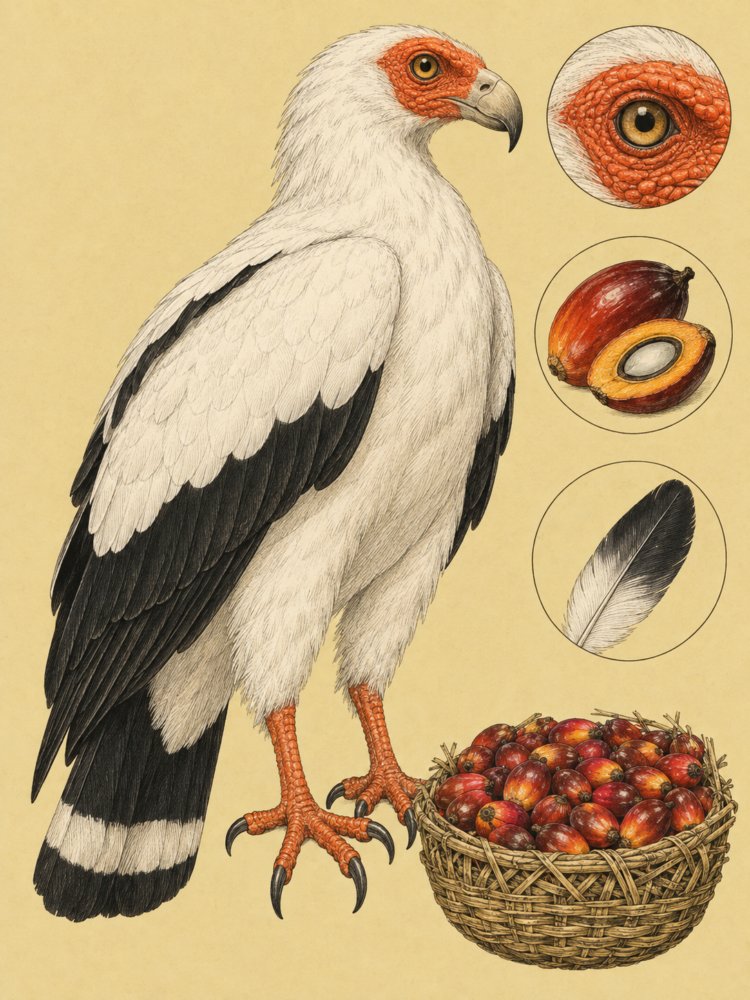

KÜSTE MOMBASA
Gypohierax angolensis
Swahili: „Mrumbapori“

An der Küste von Mombasa sitzt ein Vogel auf einer Palme, weiß am Körper und schwarz an Rücken und Flügeln. Sein Gesicht leuchtet orange. Der Palmengeier ist der kleinste Vertreter der Altweltgeier. Er wird 55 bis 65 Zentimeter lang, seine Flügelspannweite misst 133 bis 160 Zentimeter. Der kurze, gerundete Schwanz trägt ein breites weißes Abschlussband. Beine und Zehen sind kräftig orange bis rot. Bei einem erwachsenen Vogel liegen darin die Farben einer Frucht und die Kontur eines Greifvogels zugleich.
Der wissenschaftliche Name lautet Gypohierax angolensis. Gypohierax setzt sich aus den griechischen Wörtern für Geier und Falke oder Greifvogel zusammen. Das Artepitheton angolensis verweist auf das Typusexemplar aus Luanda in Angola. John Latham erwähnte die Art 1785, 1788 beschrieb Johann Friedrich Gmelin den Vogel als Falco angolensis. Nach mehreren Umstellungen durch François Marie Daudin und John Latham errichtete W. P. E. S. Rüppell 1835 oder 1836 die bis heute gültige Gattung Gypohierax. Der englische Name „Palm-nut Vulture“ wurde 1932 von James Chapin geprägt. Auf Swahili heißt der Vogel Mrumbapori.
Jungvögel sehen zunächst ganz anders aus. Ihr Gefieder ist in den ersten Lebensjahren vollständig braun, Gesichtshaut und Augen sind gelblich beziehungsweise dunkelbraun. Erst nach drei bis vier Jahren erscheint das erwachsene Weiß und Schwarz. Die Geschlechter sehen fast gleich aus, Weibchen sind tendenziell nur geringfügig größer und schwerer. Das Vorkommen des Palmengeiers folgt den Öl- und Raphiapalmen. An der kenianischen Küste lebt er an Waldrändern, in Savannen, Flusstälern und Mangroven. Auch Plantagen werden genutzt, wenn Palmen und Wasser vorhanden sind. Sein Lebensraum reicht vom Meeresspiegel bis ungefähr 1.500 Meter Höhe.
Die auffällige Farbe beginnt mit einer Frucht. Der Palmengeier frisst vorwiegend das faserige Fruchtfleisch von Ölpalmen, darunter Elaeis guineensis, und Raphiapalmen der Gattung Raphia. Diese Früchte haben einen großen Kern, wenig Fruchtfleisch, langkettige Fettsäuren und Carotinoide. Die Carotinoide gelangen ins Blut. Weil Vögel sie nicht selbst herstellen, müssen sie sie mit der Nahrung aufnehmen. Beim erwachsenen Palmengeier lagern sie sich in die unbefiederten Hautschichten ein. So werden Gesicht und Beine orange. Die Nahrung formt ein Merkmal, das im Flug schon von weitem auffällt.
Doch der Name führt leicht in die Irre. Der Palmengeier ist kein reiner Pflanzenfresser, sondern auch Raubvogel und Aasfresser. Er nimmt Fische, Krebse, Schnecken, Amphibien, Reptilien und Insekten. An afrikanischen Küsten wurden auch frisch geschlüpfte Meeresschildkröten und ihre Eier als Beute dokumentiert. Wenn man ihm Fisch und Ölpalmfrüchte anbietet, nimmt er Fisch lieber. In Freiheit fressen Jungvögel besonders viele Palmfrüchte, weil sie bei der Jagd und an Aasstellen gegenüber Erwachsenen im Nachteil sind. In Regionen ohne natürliche Ölpalmen nutzt die Art ersatzweise die fettreichen Samenanhängsel eingeführter Akazien.
Erwachsene Palmengeier suchen früh am Morgen an Fließgewässern und Küstenlinien nach Nahrung. Sie brauchen dafür keine Thermik, sondern fliegen mit schnellen, steifen Flügelschlägen. Ihre breiten, gerundeten Flügel tragen sie auch über kurze Strecken zwischen Baumkrone und Ufer. Bei Ebbe können sie am Mtwapa Creek nach Krebsen und Fischen suchen oder an der Küste gestrandete Meerestiere finden. Auch Kadaver gehören zu ihrer Nahrung. Die Vögel leben meist einzeln oder in monogamen Paaren. Solange die Nahrung reicht, bleiben erwachsene Tiere in der Regel am Ort. An Orten mit viel Nahrung bilden sich lose Gruppen von bis zu 50 Tieren. Junge und halbwüchsige Vögel ziehen in ihren ersten Lebensjahren über weite Strecken umher.
Beide Partner bauen ein Plattformnest aus trockenen Ästen, grünen Blättern und Palmwedeln. Es steht in hohen Waldbäumen, in Affenbrotbäumen oder an der Basis einer Raphiapalmenkrone. Das Gelege besteht aus einem einzigen weißen, oft dunkel gefleckten Ei. Die Bebrütungsdauer ist umstritten: Eine Angabe nennt 41 bis 44 Tage, andere sechs bis sieben Wochen. Nach dem Schlupf bleiben die Jungen 85 bis 90 Tage im Nest und kehren danach noch etwa vier Wochen zum Schlafen zurück. Die Brutperiode fällt in Ost- und Nordostafrika häufig in die Zeit von Oktober bis Juni. Zu Beginn zeigen die Paare auffällige Balzflüge. An der Küste von Bamburi und am Mtwapa Creek sind residente Altvögel dann früh am Morgen bei der Nahrungssuche zu beobachten.
Auch für den Schutz ist die doppelte Ernährung wichtig. Weil der Palmengeier Palmfrüchte frisst, galt er lange als reiner Pflanzenfresser und als unempfindlich gegen Giftköder. Tatsächlich nimmt er Aas auf und kann durch Pestizide oder Tierarzneimittel in Kadavern vergiftet werden. 2017 wurde er trotzdem aus dem Schutzplan für afrikanisch-eurasische Geier ausgeschlossen. Die Weltnaturschutzunion führt ihn als nicht gefährdet, doch diese Einstufung ist wegen veralteter Daten, Entwaldung und illegaler Jagd umstritten. Der globale Bestand wird auf etwa 240.000 Tiere geschätzt. In Westafrika wird der Vogel außerdem für traditionelle Medizin und rituelle Zwecke verfolgt und als Bushmeat gejagt. Die Palmfrucht erklärt also seine Farbe, aber nicht seine ganze Gefährdung.
Früh am Morgen zieht ein Palmengeier über die Baumkronen von Bamburi oder am Mtwapa Creek vorbei. Dann blitzt unter den schwarzen Flügeln das Weiß auf, und im orangefarbenen Gesicht bleibt die Palmfrucht noch sichtbar.
Für die kenianische Küste sind keine spezifischen Legenden, Sprichwörter oder Ritualnutzungen des Palmengeiers belegt. Auch artspezifische Namen in Maa, Kikuyu, Samburu und Giriama fehlen im Material. Belegt ist der Swahili-Name „Mrumbapori“; eine Bedeutung wird nicht erklärt. Der Kamba-Ortsname „Mtito Andei“ heißt „Wald der Geier“, ist aber kein artspezifischer Name für diesen Vogel.
Aus Zentral- und Westafrika gibt es eine andere, belastete Geschichte. Dort werden Körperteile von Geiern auf traditionellen Märkten für traditionelle Medizin und rituelle Zwecke gehandelt. Auch der Palmengeier wird verfolgt, außerdem wird er als Bushmeat gejagt. In Jagdcamps im Ebo-Wald war er der am häufigsten gewilderte Greifvogel. Die Art gilt global als nicht gefährdet, doch diese Einstufung ist wegen veralteter Daten und des Jagddrucks umstritten. Für den Küstenraum folgt daraus eine Schutzfrage: Palmenbestände, Mangroven und Gewässer müssen gemeinsam betrachtet werden, weil der Vogel seine pflanzliche und tierische Nahrung in genau dieser Verbindung findet. Diese Verbindung reicht von der Palme bis zum Geier.
Wo und wann: Beginne im Bamburi Beach, am Mtwapa Creek oder im Nguuni Nature Sanctuary unmittelbar nach Sonnenaufgang. Warte an einer fruchtenden Öl- oder Raphiapalme. Bei Ebbe kann der Vogel am Creek nach Krebsen und Fischen suchen.
Brennweite: 150 bis 600 mm für einen Palmengeier in der Baumkrone und bei der Fruchtnahrung. 100 bis 400 mm eignet sich für den Ruderflug über Creek oder Strandlinie. Für das Tier in seiner Palmenlandschaft sind 45 mm oder 26 bis 60 mm passend.
Bild-Idee: Verbinde das orange Gesicht, die weiße Brust und die schwarze Flügelkante mit der Palme im Hintergrund. Bei einem Flugbild helfen kurze Verschlusszeiten zwischen 1/800 s und 1/2500 s.